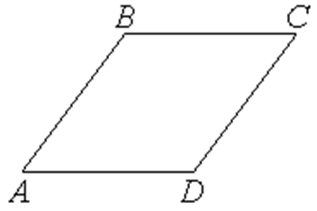

П 4.5 №22
Покажите, что четырехугольник
- ромб, если , , , .
Найдите угол при вершине ромба.
РЕШЕНИЕ:

; ;;
; ;; .
и
– ромб.
,
.
Ответ:.
 -
ромб, если , , , . -
ромб, если , , , . –
ромб. –
ромб. -
ромб, если , , , . –
ромб.
-
ромб, если , , , . -
ромб, если , , , . –
ромб. –
ромб. -
ромб, если , , , . –
ромб.